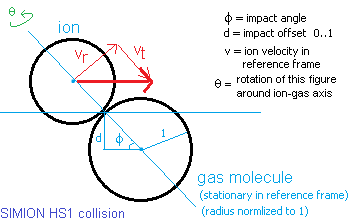

Purpose
This is SIMION user program implements a rather complete hard-sphere collision model. Collision models are useful for simulating non-vacuum conditions, in which case ions collide against a background gas and are deflected randomly.
Description
Features and assumptions of the model:
- Ion collisions follow the hard-sphere collision model. Energy transfers occur solely via these collisions.
- Ion collisions are elastic.
- Background gas is assumed neutral in charge.
- Background gas velocity follows the Maxwell-Boltzmann distribution.
- Background gas mean velocity may be non-zero.
- Kinetic cooling and heating of ions due to collisions are simulated.
- Kinetic cooling and heating of background gas is assumed negligible over many collisions.
- Suitable for lower pressures (for high or atmospheric pressures, see instead the SDS model noted below, which is more computationally efficient)
For further details see the information online: http://www.simion.com/info/Collision_Model_HS1.
See also comments in the Lua program. Additional notes and mathematical derivations are included in notes.pdf.
Files in this demo:
- README.html - Description of this demo
- collision_hs1.iob - SIMION workbench
- collision_hs1.fly - SIMION particle definitions linked to collision_hs1.iob
- collision_hs1.lua - SIMION user program linked to collision_hs1.iob. This implements the collision model.
- collision_hs1.pa - SIMION potential array linked to collision_hs1.iob. This PA is empty (no fields) for demonstration.
- test2.iob/lua - a second example, illustrating various ways to define pressure, temperature, and velocity as a function of position.
Usage
collision_hs1.iob
- Load the collision_hs1.iob file and fly. (Click View on main screen, select collision_hs1.iob, and press the Fly'm button.) By default, collisions are marked with dots. You may experiment with the adjustable variables in the Variables tab.
test2.iob
- Load the test2.iob file. (Click View on main screen, select collision_hs1.iob, and press the Fly'm button.)
- Enabled Grouped flying. Check Grouped on the Particles tab.
- Set the _mode variable on the Variables tab to one of the modes defined in test2.lua. The default value is 1.
- Read the test2.lua source code. This illustrates various ways to define the background gas pressure, temperature, and velocity as a function of position.
- Fly ions. (Click Fly'm.) Note the shape of the beam, and particularly how parabolic velocity profiles and temperature and pressure gradients affect different portions of the beam in space.
Additional Notes
Performance and pressure: The HS1 model is most suitable for low pressures (e.g. sub-torr). The simulation speed decreases as the pressure is increased because HS1 simulates individual collisions, and collision frequency increases (or mean-free-path decreases) with increasing pressure. If can be instructive to view the mean-free-path variable by temporarily uncommenting the line "print('DEBUG: MFP=',effective_mean_free_path_mm)" in collision_sds.lua. Alternately, with the Grouped option disabled on the Particles tab, set the _mark_collisions variable on the Variables tab to 1 so that each collision will be marked with a dot on the screen.
Applying the HS1 model to your own simulations: A simple way to attach the HS1 model to your own simulation is to copy the collision_hs1.lua file to the same folder as your .iob file but rename collision_hs1.lua to have the same base name as your .iob file (e.g. mysystem.lua if your .iob file is mysystem.iob).
If you need to add your own workbench user program code, it can be cleaner to leave collision_hs1.lua untouched and keep your own code in a separate file. To do so, put your own code in mysystem.lua, and from mysystem.lua add the statement "simion.import 'collision_hs1.lua'" to import the HS1 model into your own file. The "ims", "ionfunnel", and "collision_hs1\test2.iob" examples are examples of this approach.
Varying pressure, temperature, or background gas velocity. You may want to make the gas state vary as a function of position, time, ion number, etc. Various adjustable variables (_pressure_pa, _temperature_k, _vx_bar_gas_mmusec, _vy_bar_gas_mmusec, and _vz_bar_gas_mmusec) define the current state of the background gas. You may modify these adjustable variables during the simulation from an other_actions segment, but a cleaner solution is to utilize the features provided by HS1 for defining the gas state from a Lua function, array in CSV text format, or (in SIMION version 8.1) from a regular SIMION potential array. The test2.iob / test2.lua example described above provides various examples of this. For example,
simion.workbench_program()
local HS1 = simion.import "collision_hs1.lua" -- Import HS1 collision model
function HS1.velocity(x_gu, y_gu, z_gu) -- Parabolic velocity vector profile.
local vx = (150-y_gu)*(150+y_gu) / 100
local vy = 0; local vz = 0
return vx,vy,vz
end
The function is passed the current particle's coordinates in grid units, oriented in the coordinate system of the current array. The function is expected to return the x, y, and z coordinates of the velocity vector in units of mm/µsec, oriented in the coordinate system of the current array. The function may alternately use the ion_px_mm, ion_py_mm, and ion_pz_mm reserved variables, which represent the current particle position in units of mm and oriented in workbench coordinates, though the direction of the vector it returns must still be oriented in array coordinates (this only makes a difference if the current potential array instance is rotated relative to the workbench). Any other reserved variables accessible from an other_actions segment may also be used (e.g. ion_time_of_flight, ion_number, ion_instance, etc.) For example, you may make different particles experience different pressures:
simion.workbench_program()
local HS1 = simion.import "collision_hs1.lua" -- Import HS1 collision model
function HS1.pressure(x_gu, y_gu, z_gu) -- Pa
local P = ion_number * 2.5
return P
end
The following functions can be defined:
- HS1.pressure - given position is expected to return a pressure in units of Pa
- HS1.temperature - given position is expected to return a pressure in Pascals
- HS1.velocity - given position is expected to return the x, y, and z components of the velocity vector in units of mm/µsec and oriented in the coordinates of the current potential array instance)
- HS1.velocity_x, HS1.velocity_y, and HS1.velocity_z - these are similar to HS1.velocity but define the components of velocity individually and are expected to return a single number. Any or all of these may be defined instead of HS1.velocity.
These functions, if defined, override the corresponding adjustable variables defining gas state.
Instead of providing a function, you may alternately provide an array object that behaves like a function. This includes providing a simionx.FieldArray (see Example: Field Array). In SIMION 8.1, you may provide a potential array object whose values contain not potentials but rather pressure, temperature or velocity components. Note that a simionx.FieldArary stores 3D vectors, and all but the first components are ignored when used for anything except HS1.velocity. In constrast, SIMION potential array objects store scalars, so they cannot be used in HS1.velocity but may be used, for example, in HS1.velocity_x.
Gas dynamics comments: Pressure, temperature, and velocity are governed by the Navier-Stokes equations. You should be careful to ensure your gas state is realistic. For example, a pressure gradient implies a non-zero velocity, and gas flow through a tube can follow a parabolic velocity profile (velocity maximum at the center of the tube, zero one the sides, a parabolic shape in-between). SIMION itself does not solve the background gas profile for you (it's a more complicated problem, which CFD software helps with), but if you know the gas profile via an equation or numerically, you can input it as shown above. The documentation of the Example: FAIMS (which does not use HS1) goes into more detail on this.
Gas Mixtures
Two approaches might be taken for gas mixtures (e.g. air contains unequal amounts of nitrogen and oxygen). First, you could treat the gases independently by calling the HS1 code separately for each set of gas parameters:
simion.workbench_program() local HS1 = simion.import "collision_hs1.lua" adjustable mass1 = ..... -- note: fill in values for each parameter here. adjustable mass2 = ..... adjustable sigma1 = ..... adjustable sigma2 = ..... adjustable pressure1 = ..... adjustable pressure2 = ..... function segment.other_actions() adjustable _gas_mass_amu = mass1 adjustable _sigma_m2 = sigma1 adjustable _pressure_pa = pressure1 HS1.segment.other_actions() adjustable _gas_mass_amu = mass2 adjustable _sigma_m2 = sigma2 adjustable _pressure_pa = pressure2 HS1.segment.other_actions() end
Here, the pressures are understood as the partial pressures of each gas. For each gas, HS1 will compute its own mean-free-path, collision probability against that gas, and impact momentum transfers.
An alternate technique that has been used is to set the cross section and mass to some type of weighted average between the two gases. Such an approximation may impose assumptions (TODO: it would be good to work out the math to see if it makes any difference whatsoever).
Collision Process

Above is a diagram illsutrating the ellasic collision process modeled.
See also
- Example: SDS Collision Model advanced model that handles high (e.g. atmospheric pressure) better and more efficiently than HS1.
- Example: Drag Model, based simply on Stokes' Law.
Changes
REV-4 made this correction:
Issue I362 - HS1 collision model does not accurately thermalize.
http://www.simion.com/issue/362
REV-5 interface changes - returns table HS1.
REV-6 allow easier customization via
HS1.pressure, HS1.temperature, and HS1.velocity[_x|_y|_z] variables.
Recalc mean-free-path on pressure or temp change.
2011-08-12 - Removed caching of mean-free-path calculation. This optimization
didn't improve speed much and could even decrease speed. The optimization was
also more error prone if certain variables like _gas_mass_amy and _sigma_m2 are
changed during the run.
Source
Author: D.Manura, 2005-2006.